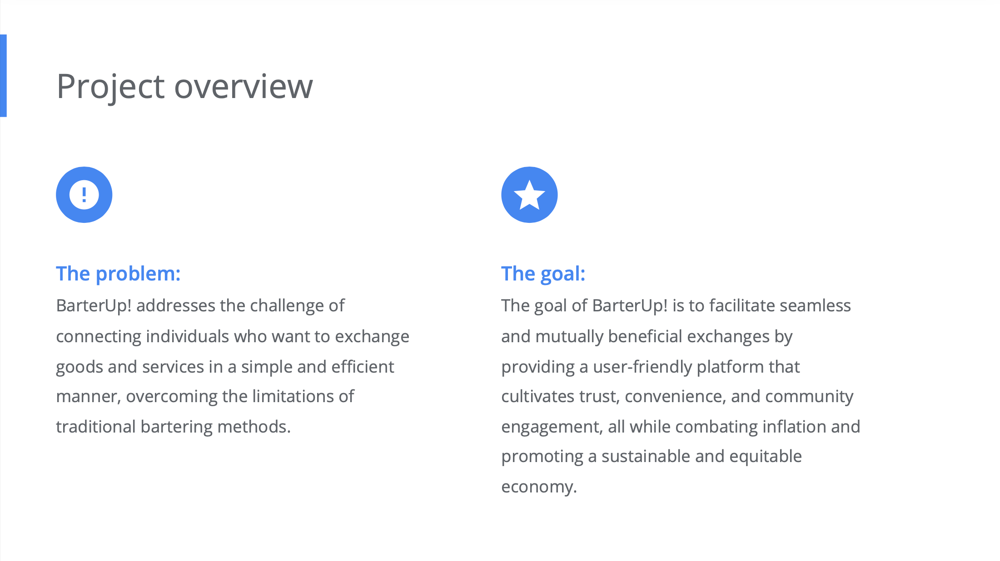
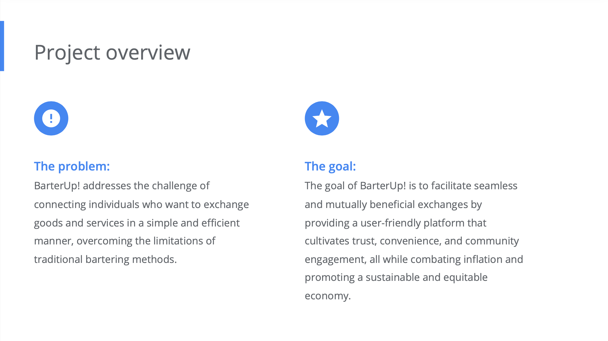

Parker Mozingo
Web & UX Design Student
Web & UX design student, passionately advocating for accessibility to ensure inclusivity for special needs. Lifelong learner committed to perpetually expanding knowledge. Intrigued by the intersection of design & tech.
"Forever Curious, Forever Growing: The Journey of Learning Never Ends" -Unknown
Featured Projects
View featured project below. More information can be found in My Portfolio.
BarterUp!
 

You can view my High-fidelity Prototype here.
Work Experience
Embarking on my journey as a web and graphic designer, I bring a fresh perspective and an unbridled passion for the industry. While I may be in the early stages of my career, I'm enthusiastic about every opportunity to grow. I have a passion for supporting small businesses, believing that a robust digital presence can push them to new heights.
Social Media Manager
Everyday Kids Community Center
1.5 years
At Everyday Kids, a unique blend of physical therapy and indoor play center, I spearhead our digital outreach initiatives. My role entails managing our social media channels, ensuring our online presence resonates with both our therapeutic goals and the playful energy we bring to our community. Beyond regular postings, I oversee online advertising campaigns that enhance our visibility and reach.
One of my pivotal contributions is the creation and distribution of newsletters, keeping our clients informed and engaged. Additionally, I am responsible for planning and promoting special events, crafting experiences that not only benefit our attendees but also elevate our brand's footprint in the community.
Key Responsibilities & Achievements:
- Spearheaded digital outreach initiatives to elevate the brand's online presence.
- Managed multiple social media channels, aligning content with therapeutic goals and the center's playful ethos.
- Oversaw online advertising campaigns, optimizing for visibility and reach.
- Created and distributed informative newsletters to engage and update our client base.
- Planned and promoted special events, enhancing the brand's community engagement.
- Crafted unique experiences for event attendees, contributing to the elevation of the brand's community footprint.
Education
Wake Technical Community College - Raleigh, NC
Web & UX Design 2022-Present
- Advertising & Graphic Design Certificate - 2023
- Phi Theta Kappa
- Lenovo Technology Leadership Scholarship
- The Pearson Higher Ed Scholarship